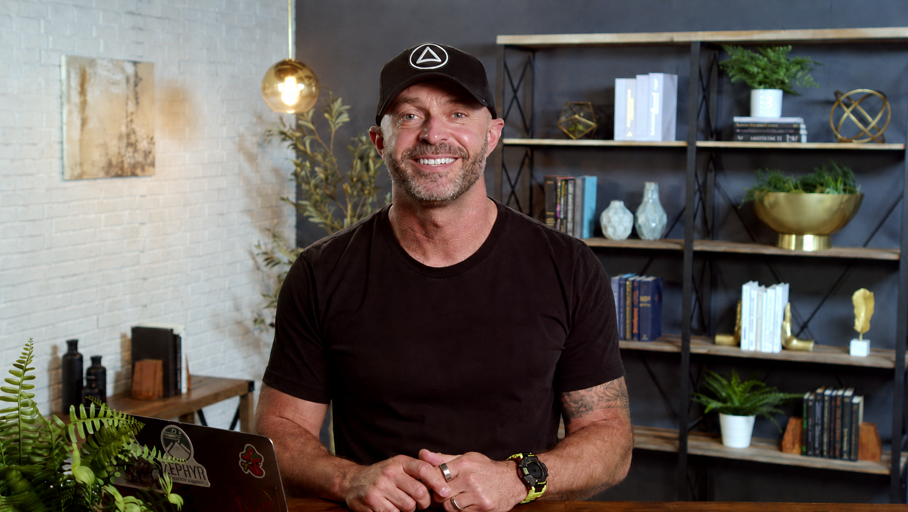
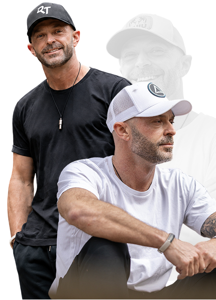

26+ Acquisitions · Multiple 8-Figure Exits
This Is Exactly How Ross Does It.

The Real Problem
You started because you were good at it. You built a business because you wanted more. Somewhere along the way you stopped doing the work and became the person holding everything together.
The revenue is there. The team is there. But so are you. Every day. Every problem. Every call.
You know your industry is consolidating. Competitors you have watched for years have sold. And you are not sure whether that future is coming for you on your terms — or someone else's.
At 11pm on a Tuesday you are running the numbers again. Not because they are bad. Because you cannot switch off.
This is not a business problem. It is a structure problem. And no amount of harder work will fix it.
Most business owners scale the way they started. More hires. More marketing. More effort.
That works, until it doesn't. Because eventually your time becomes the ceiling — and every new client, every new contract, every new hire adds complexity that finds its way back to you.
You have tried the conventional answers.
You understand the theory. The problem is not knowledge. It is that nobody is showing you a model that actually changes the structure of what you are building.
A Different Model
Most business owners spend their entire career in the first. It is the slowest path. The most demanding. And the one most likely to keep you personally responsible for everything that moves.
The 7 Figure Founder shows you how to use all three — properly. Starting with the part nobody else addresses first.
YOU.
Because you cannot build a skyscraper on the foundation of a bungalow. And you cannot scale a business beyond yourself if the person trying to do it is running on empty, unclear on direction and not yet thinking like an owner.
Introducing The 7 Figure Founder
Refined across 26+ acquisitions and nearly two decades of real-world execution. This is not theory. This is how Ross builds, and how he is still building, every single week.
*All Program Materials Delivered in Digital Format.
Grow beyond your personal capacity instead of being limited by it. The ceiling is structural, not personal.
Step out of day-to-day dependency and into genuine control. The business runs because it is built properly — not because you are holding it together.
Create something that extends beyond a single business. Real wealth is not revenue. It is what you own, what you have exited and how much of your time you have bought back.
Inside The 7 Figure Founder
This is not a collection of lessons. It is a progression. Each module builds on the last because that sequence is what makes it work.
Module 01
Before strategy comes clarity. Define what you are actually working toward, understand the three paths to growth — buy, build or partner — and complete your Scale Readiness Assessment so you know exactly where you stand before you take a single step forward.
You move from reactive to intentional.
Module 02
Your health is your most important business asset. You'll establish your personal health baseline, learn the Vase Principle for building your life around what matters most and implement Conscious Calendaring — the three-column system that ensures high performance never comes at the cost of your wellbeing.
You stop running on empty.
Module 03
Deal-making is not easy and anyone who tells you otherwise has not done enough deals. You will face rejection cycles that last months. This module gives you the tools to keep going — reverse engineering from an audacious goal down to your daily non-negotiables.
You become consistent, not just motivated.
Module 04
The founders who scale are the ones who know who they are before the pressure arrives. This module covers identity work, spiritual practice and leading with clarity rather than fear. If you are not ready for it yet, put a pin in it. It will be here.
You stop thinking like an operator.
Module 05
Trust is built before opportunity appears — not at the same time. Personal branding, the Zero Moment of Truth, mentorship and the £10/£100/£1,000 task framework. Stop doing the wrong work and start having the conversations that actually move the needle.
You stop chasing and start attracting.
Module 06
Joint ventures, strategic partnerships, business development contracts and grant funding most business owners do not know exists. Growth that does not require you to raise capital or do it alone.
You unlock growth without increasing workload.
Module 07
Define your acquisition strategy, identify the right businesses, build rapport with sellers and learn to value a business properly. Because valuation changes everything — what you pay, how you structure and whether the deal makes sense at all.
You replace guesswork with clarity.
Module 08
Twenty ways to acquire a business, including with no money down. Capital raising, deal teams, due diligence and a full real-life case study walk-through. This module closes the gap between understanding deals and doing them.
You move from learning to executing.
Module 09
Wealth is not revenue. Asset classes, geographic diversification, protecting what you have built, investing your exits wisely and building a life not tied to the performance of one business.
You build beyond income.
The Difference
Most programs start with tactics. This one doesn't.
Because the founders who fail at deals are not failing tactically. They are failing psychologically. And the business owners who never reach their potential are not failing strategically. They are failing structurally — trying to build something extraordinary on a foundation that was never built to hold it.
The 7 Figure Founder is built in order:
That sequence is not arbitrary. It is the reason it works.
26+
Acquisitions completed
5
Successful exits
7–8 Fig
Businesses built, scaled and sold
Devdeep Singh
Came into Ross's world two years ago with four employees, £600,000 in revenue and a level of burnout that had him close to walking away entirely. Today he works 10 hours a week, has completed 6 acquisitions, employs 200 people and will cross £20 million in revenue this year.
Ove, Claire & Yves
Each completed 2 to 3 acquisitions and scaled their physiotherapy businesses to seven figures. Four doctors and two home care providers have started and scaled businesses under Ross's guidance. Seven figures of investment capital has been raised from within his mastermind community alone.
These results are not typical. But they show what is possible when the foundation is right and the model changes.
About

Ross did not arrive at mergers and acquisitions through a straight line. He spent nearly a decade building a physiotherapy business one client at a time until it reached £1.7 million in revenue. Then a single meeting cost him seventy percent of that overnight. Within ten minutes he was planning. Not grieving. Planning.
The business was rebuilt, then sold. A new chapter began. The first two years of deal-making produced no acquisitions. Hesitation. Procrastination. Deals missed because the fear of commitment disguised itself as the need for more due diligence. Ross lived the psychological reality of deal-making before he mastered it — which is why he understands it in a way no course or credential can manufacture.
In May 2025 he was airlifted off Denali. Five specialists across five countries. Five different diagnoses. Surgery followed. More awaits. Through all of it he kept building, mentoring and doing deals — not because he is invincible, but because he has built his life on a foundation that does not collapse when one part of it is under repair.
He still does deals. Every single week. He is not teaching history.
This is for you if:
This is not for:
What You Get Inside The 7 Figure Founder
So you're not guessing or piecing things together
How to consistently find real opportunities (not noise)
Including how to position yourself so deals come to you
Clear walkthroughs of how deals are actually put together
So you understand what makes a deal work before you get involved
Outreach scripts, deal flow templates, positioning frameworks
So you don't have to start from scratch
Analyze opportunities faster, spot patterns, streamline your process
Tools to help you work with clarity at each stage
Direct access to Ross and fellow members of the program
THIS is where deals get done
If You Want to Go Further
The Ascend Network
A live deal-making and execution environment with access to Ross's active network and community of serious operators. For more information on this more involved process, DM me
The Ascend Partnership
Want to collaborate with Ross and the entire Balmoral Partners team? Apply today
Most people haven't. That is exactly where this course begins, with the foundation and the framework, before the first conversation with a seller.
Deals are structured, not just funded. The course covers 20 different ways to acquire a business, including approaches that require no money down.
Your current model is not going to create more of it. That is precisely the problem this course is built to solve.
Ross has worked with physiotherapy clinic owners, home care providers, GP practices and specialist healthcare businesses. The 7 Figure Founder applies across the sector.
Ross is currently working three live deals. The case studies in this course are drawn from acquisitions he has completed. Nothing here is taught from memory.
You already know how to build.
The question is whether you continue doing it the same way — more effort, more hours, more weight on the same foundation — or whether you change the model entirely.
The 7 Figure Founder shows you how to scale beyond yourself. Not by working harder. By building differently.
I'm Ready to Scale